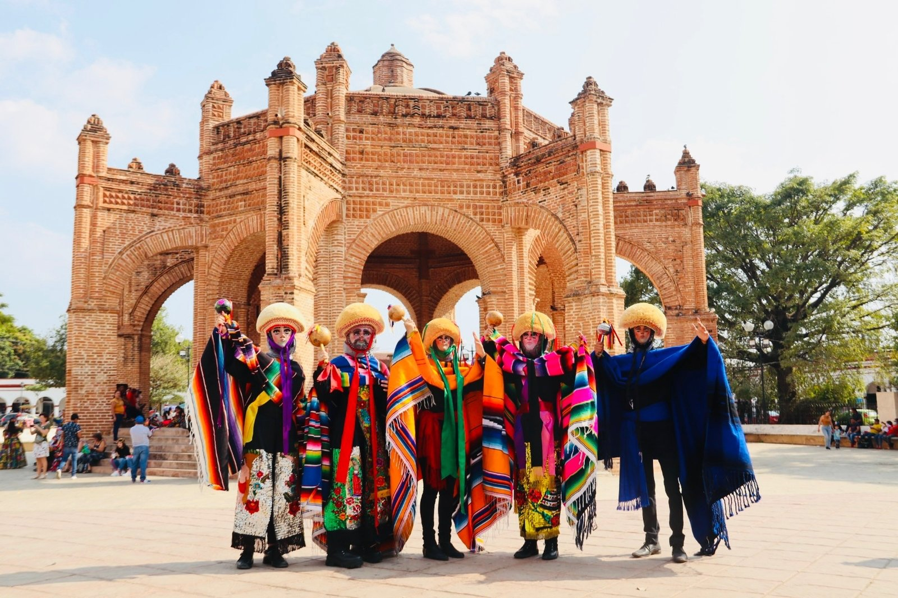
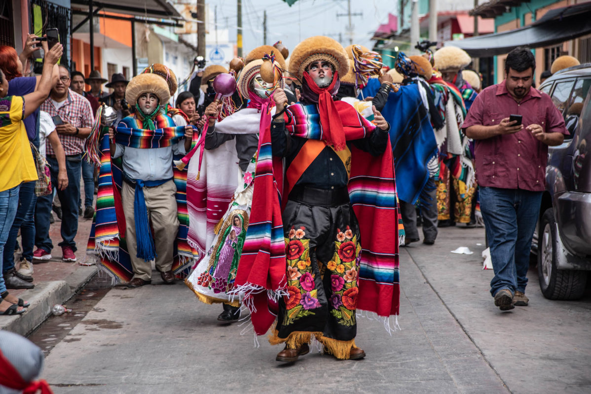

Lista de Eventos en Chiapas
-
🎉 Fiesta Grande de Chiapa de Corzo
Una de las celebraciones más antiguas, llena de color, parachicos y chiapanecas.


-
☕ Festival Internacional del Café
Exhibición, talleres y degustación de los mejores granos de la región.
-
🎡 Feria Chiapas
La máxima fiesta ganadera, agrícola y comercial del estado en Tuxtla Gutiérrez.

-
🎭 Festival Cervantino Barroco
Música, arte y expresiones culturales en las calles de San Cristóbal de las Casas.